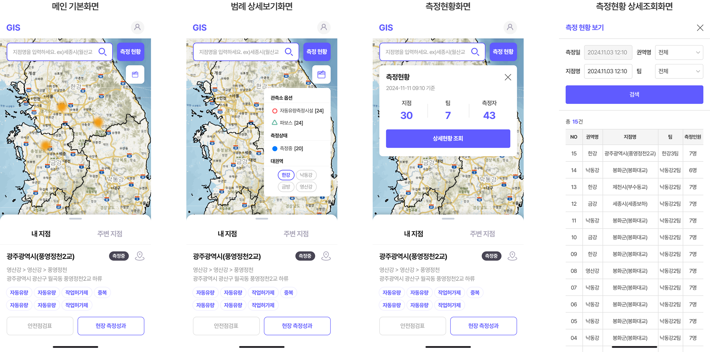

GIS
GIS 수문정보시스템 관제 플랫폼 디자인
GIS 수문정보시스템은 전국 수문 관측 지점과 현장 직원의 위치·업무 현황을 실시간으로 모니터링·관리하는 관제 플랫폼입니다. 현장 대응 속도와 안전 점검 효율, 인력 배치 최적화를 목적으로 웹과 모바일 양쪽에서 사용 가능하도록 설계했습니다.
관제 담당자와 현장 직원이 동일한 정보 구조를 공유하도록 PC·모바일 동일 레이아웃을 적용해 디바이스 간 분기를 최소화했고, 모바일 환경에서는 지도 영역을 우선화하고 보조 기능을 플로팅 컨트롤로 정리해 현장에서의 즉각적 지점 확인을 우선했습니다. 복잡한 관제 정보(관측 데이터·인력 상태·알림)를 직관적으로 구분할 수 있도록 그리드와 카드 시스템을 체계화했으며, 전통적 관제 시스템의 보수적 팔레트에서 벗어나 보라 계열 메인 컬러(#605BFF)를 적용해 현대적·기술적 인상을 부여하면서 상태 컬러와의 시각적 충돌을 회피했습니다.
관제 시스템 특성상 일반 정보 사이트보다 정보 밀도가 높은 환경에서, 데이터 가시성과 시각적 피로도 사이의 균형이 디자인 의사결정의 주요 기준이었습니다.
Project Goal
복잡한 관제 정보를 직관적인 UI로 정리하는 방향으로
PC와 모바일 동일 화면 적용 — 모바일 가독성 저하
PC·모바일 동일 레이아웃 적용
일관된 사용자 경험 제공
일관된 사용자 경험 제공
모바일 환경에서도 지도 화면을 최대한 넓게
지도 전체화면 제공 및 기능 버튼 최소·최적화
모바일 가독성 및 사용성 강화
모바일 가독성 및 사용성 강화
콘텐츠 구조가 복잡하여 직관적인 UI로 구성
레이아웃·컴포넌트 체계화 및 그리드 시스템 적용
정보 전달력 및 접근성 향상
정보 전달력 및 접근성 향상
전통 관제 시스템의 보수적 컬러 팔레트
보라 계열 메인 컬러(#605BFF) 적용
현대적·기술적 인상 + 상태 컬러와 시각 충돌 회피
현대적·기술적 인상 + 상태 컬러와 시각 충돌 회피
